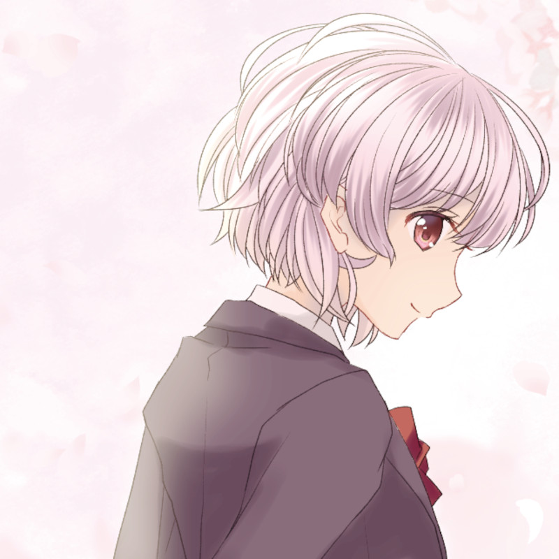

Hina Mitsuki
私はみくりちゃんの側に居るよ、何があっても。
私はみくりちゃんの側に居るよ、何があっても。
――少女のその笑顔は満開の花を彷彿とさせる。
桃色の髪にピン留めを着けた明るく活発な少女。
みくりの恋人で、絶望したみくりに共に自殺することを提案する。
幼少期に姉を亡くしており、愛情面での欠落が見受けられる。
着けているピンは亡くなった姉の形見である。
何も考えていないようで計算深く、それを隠し切る能力にも長ける。
――面影を重ね、想いを重ねる。
三月ひなの髪留めは亡き姉の物である。これはみくりも知っていたのだが、それ以上の情報は知らなかった。
ひなの姉は二歳上で、ひなが小学校二年生の頃に亡くなった。死因は病死だった。生まれつき身体が弱かったのである。そんな姉は生前ひなに対してとにかく苦痛を隠し優しい姉として妹と文字通り全力で向き合い、（今となっては信じるものは居ないが）人見知りが激しかったひなの隣に常に寄り添う存在だった。
そんな姉が亡くなってからひなは姉の影を追うように人見知りをどうにか治し、輪の中心に立てるような人間にまで至った。それでも、ひなには足りないものがあった。それは世の中一般的には愛情と言われるものだった。
別に親子仲が不仲だったわけではなく、一般的な家庭ではあったが、姉という存在が大きすぎた為、ひなはその空いた穴を埋められずに数年を過ごした。
そんな最中、ひなは高校生になった。ひなの通うことになる高校にはあまり中学生の同級生が居ないため、どうしようかと内心焦りがあった。はっきり言ってひなは新しく関係を作るのが苦手なのだ。今までは小学校から中学校へそのまま持ち込まれていった人間関係が今の高校には通用しない、それはすなわちひなに試練を意味する物であった。
どうしたものかと悩みながら入学式を終えるとひなは同級生の姿を見て声を上げかけた。なぜならその人物は亡き姉の姿にあまりにも似ていたからである。どうにか仲良くなりたいと髪留めを撫でながら祈る。
しかし、その少女は輪にあまり積極的に入る人間ではなく、ひなは頑張って作った人間関係にすら呆れを抱いてしまった。せっかくディナーを用意しても振る舞う人間が居なければ成立しないからである。
事態が好転したのは翌月の校外研修の時だった。その少女が一人で座っているものだから、ひなは右足を踏み出した。「あ、あの！」と声をかけると少女はびっくりしながら「えっと、なにかな？」と返す。いきなり声をかけたらそう言う反応にはなるのだが、今のひなにはそれがわからないくらいには衝動的な行為だった。「一緒にどう、かな？」と少し恥ずかしげに、そしてここでようやく自分が行った行為が突拍子もないことだと気付き後悔しかけたその時、少女ははにかみ「ありがとう、ひなちゃん」と返す。
こうしてひなはその少女――憂節みくりと仲良くなるきっかけを得て、その郊外研修を通じて仲を深めた。
二人の相性は本物の姉妹を彷彿とさせ、一週間が経つ頃にはそれが当然であったかのように打ち解けていたし、（お互い気付いていないのだが）恋心も薄っすらと抱いていくことになる。
そして六月、七月を共に過ごすとひなとみくりは二人で出かけるまで仲を深め、二週間に一度は二人で遊ぶ仲になり夏休みが訪れた。
夏休みに入るとその間隔は更に短くなり、週に一回遊ぶようになった。それはみくりから誘ってくる事もあったが、ひなが誘う事が多かった。理由はもっと仲良くなりたいと言う物でもあるし、それと同時に想いを伝える――告白のタイミングを計っていたのである。
そうして今日もショッピングモールにやってきた。今日こそは想いを伝えよう。そう思いながらカフェに入る。応援して、お姉ちゃんと願いながら髪留めにそっと触れる。
こうして、ひなはみくりに告白する事となった。